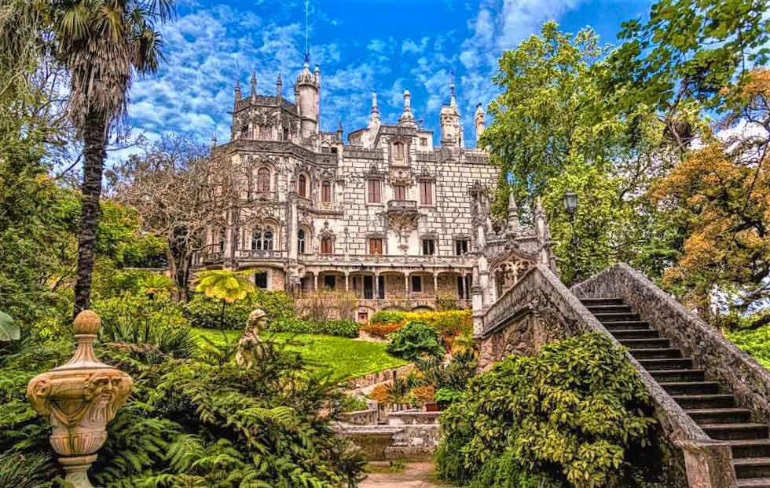
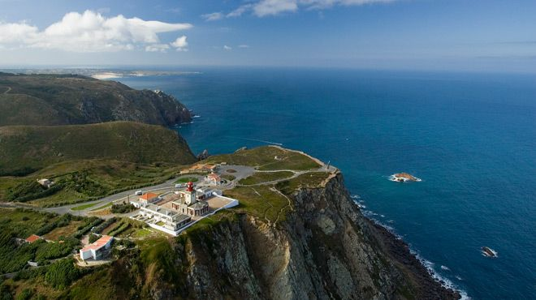
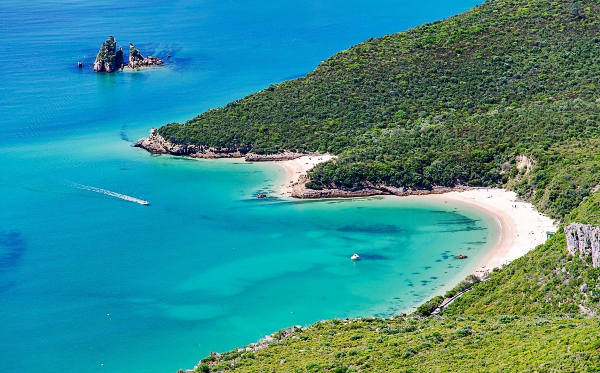

Lisbon Day Trips & Nature
Escape the city bustle and discover fairytale castles, dramatic ocean cliffs, and pristine coastal nature reserves just a short journey from Lisbon.

Fairytale EscapetSintra & Quinta da Regaleira
A magical UNESCO town nestled in misty pine hills, famous for romantic palaces, hidden tunnels, and the iconic initiation well at Quinta da Regaleira.
- Sintra (40-min direct train from Rossio Station)
- Free town access | €8 – €12 Student Entry to Regaleira

Coastal AdventureCabo da Roca & Cascais
Stand at the westernmost point of continental Europe overlooking dramatic ocean cliffs, then stroll through the charming seaside town of Cascais.
- Cascais & Sintra Coast
- Free access (Train included in Navegante pass)

Crystal WatersSerra da Arrábida Natural Park
A breathtaking mountain park featuring green pine forests, hiking trails, and hidden turquoise beaches that look straight out of the Caribbean.
- Setúbal / Sesimbra Coast (South of Lisbon)
- Free park access | Bus fare ~€3 – €5
Erasmus Local Tip
Your monthly Navegante Pass (€30/€40) covers the train trips from Lisbon to both Sintra (from Rossio) and Cascais (from Cais do Sodré) completely for free! To reach Sintra's castles, leave before 9:00 AM to beat the huge tourist crowds, and take local bus 1253 from Sintra station to Cabo da Roca.